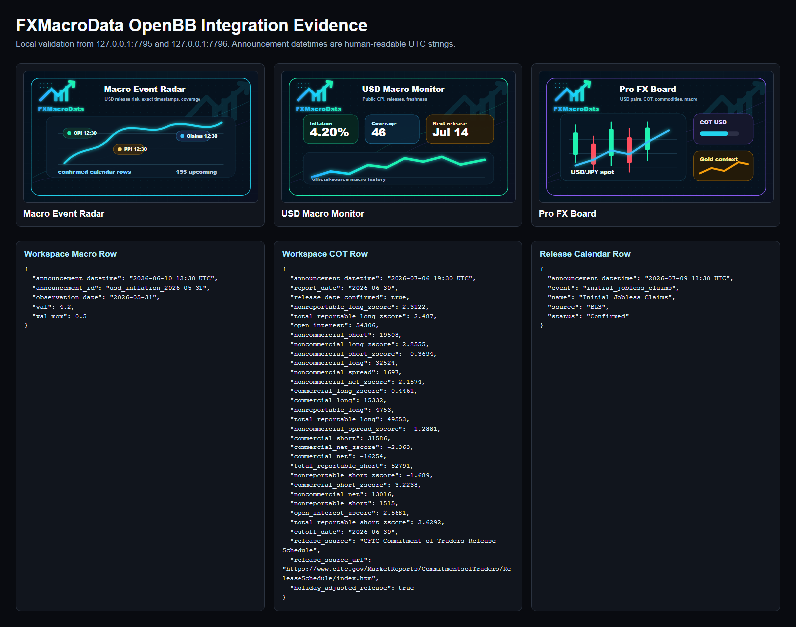
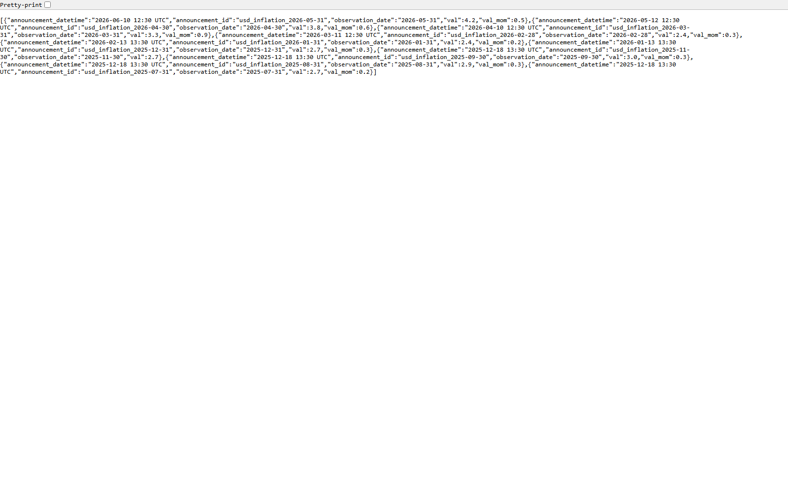
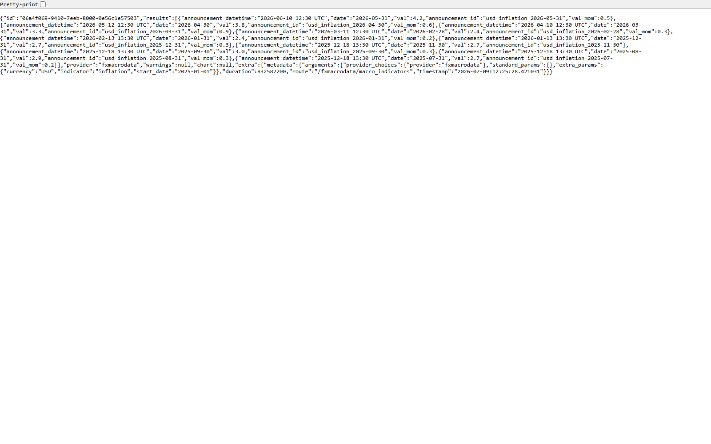

Date: 2026-07-09
Repository: C:\Users\rober\dev\fxmacrodata\fxmacrodata
Release candidate: fxmacrodata 1.2.0
Branch: codex/openbb-pre-release-validation
No PyPI publish, GitHub release, tag, OpenBB PR, or external push was performed.
| Area | Result | Evidence |
|---|---|---|
| Full SDK test suite | Pass | python -m pytest tests -q returned 39 passed, 2 skipped |
| Lint | Pass | python -m ruff check fxmacrodata tests |
| Formatting | Pass | python -m black --check fxmacrodata tests |
| Type check | Pass | python -m mypy fxmacrodata in a clean dev validation venv |
| Package build and metadata | Pass | python -m build and python -m twine check dist\* |
| Fresh wheel install | Pass | Installed wheel with OpenBB API, Workspace, and MCP extras in a clean venv |
| OpenBB entry points | Pass | openbb_core_extension and openbb_provider_extension expose fxmacrodata |
| OpenBB build | Pass | openbb-build discovered fxmacrodata@1.2.0 |
| Generated OpenBB API | Pass | Returned USD catalogue, macro history, and release calendar rows |
| Custom Workspace backend | Pass | Returned widgets, apps, hosted app images, macro, COT, calendar, and timeline data |
| Human-readable datetimes | Pass | Macro, COT, and calendar rows use YYYY-MM-DD HH:MM UTC |



fxmacrodata 1.2.0 to PyPI.openbb_platform/providers/fxmacrodata package only if OpenBB maintainers request it.